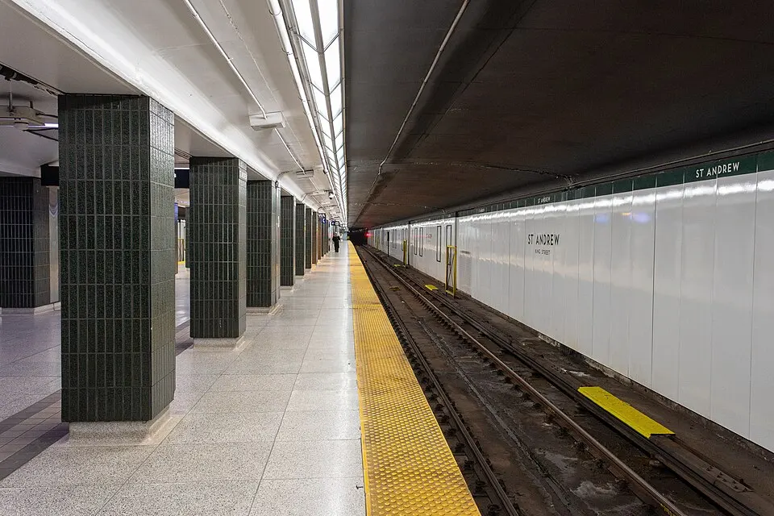

Signal
SignalStation atlas / St Andrew
Station history
St Andrew


Station history
The University extension opened its King Street West station, displaying the cross street beneath the station name.
New platform cladding recalled the original grey and blue colour scheme and restored the TTC lettering.